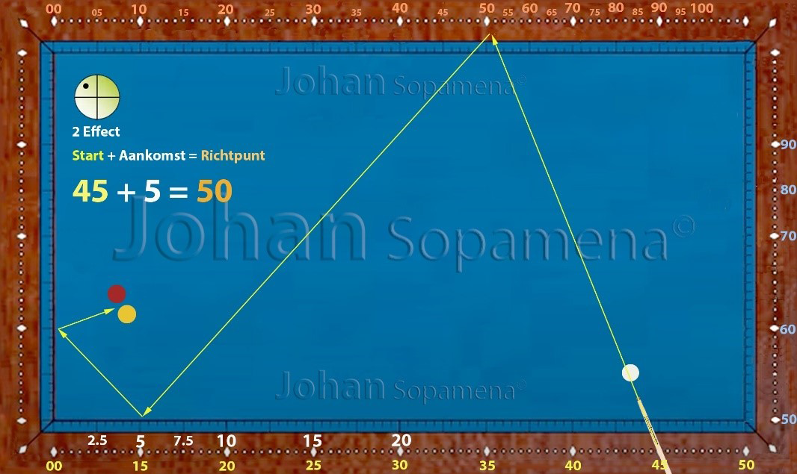

Hoofdstuk 13 – Plus systeem
Professionele uitleg
Het Plus systeem behoort tot de familie van correctiesystemen binnen het driebandenspel. Waar de klassieke diamond‑telling vaak een goede basis geeft, kan deze in de praktijk tekortschieten door variaties in tafelcondities, stoottempo of balcontact. Het Plus systeem biedt een eenvoudige maar krachtige oplossing: door een vaste waarde toe te voegen aan de berekende diamond‑telling verleng je de speelbal‑lijn en vergroot je de voorspelbaarheid van het resultaat.
De essentie van het systeem is dat je de standaardtelling niet als absoluut ziet, maar als uitgangspunt. Afhankelijk van de situatie voeg je een correctiewaarde toe — meestal +2, +4 of +6. Deze pluswaarden zijn empirisch vastgesteld en geven de speler de mogelijkheid om snel en consistent te corrigeren zonder complexe berekeningen. Het systeem is daardoor bijzonder geschikt voor wedstrijdsituaties waarin tijdsdruk en precisie samenkomen.
Professioneel gezien is het Plus systeem waardevol omdat het:
- Flexibiliteit biedt: toepasbaar op verschillende tafels en condities.
- Efficiëntie verhoogt: snelle correcties zonder lange berekeningen.
- Consistentie garandeert: reproduceerbare lijnen bij herhalende patronen.
- Integratie mogelijk maakt: combineerbaar met andere systemen zoals het 16+ systeem.
Voor gevorderde spelers is het belangrijk om de pluswaarden niet mechanisch toe te passen, maar te leren voelen welke correctie past bij de specifieke situatie. Dit vraagt om intensieve training, waarbij men bewust varieert en observeert hoe de speelbal reageert. Zo ontwikkelt de speler een intuïtief begrip van het systeem en kan hij het in de praktijk met vertrouwen inzetten.
Figuur 01: hoofdstuk-13-figuur-01.png
 Figuur 01: Basislijn met +4 correctieFiguur 02: hoofdstuk-13-figuur-02.png
 Figuur 02: Variaties bij verschillende pluswaarden
Figuur 02: Variaties bij verschillende pluswaarden